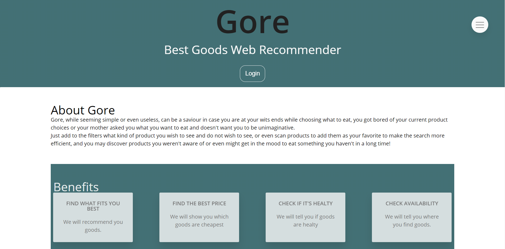
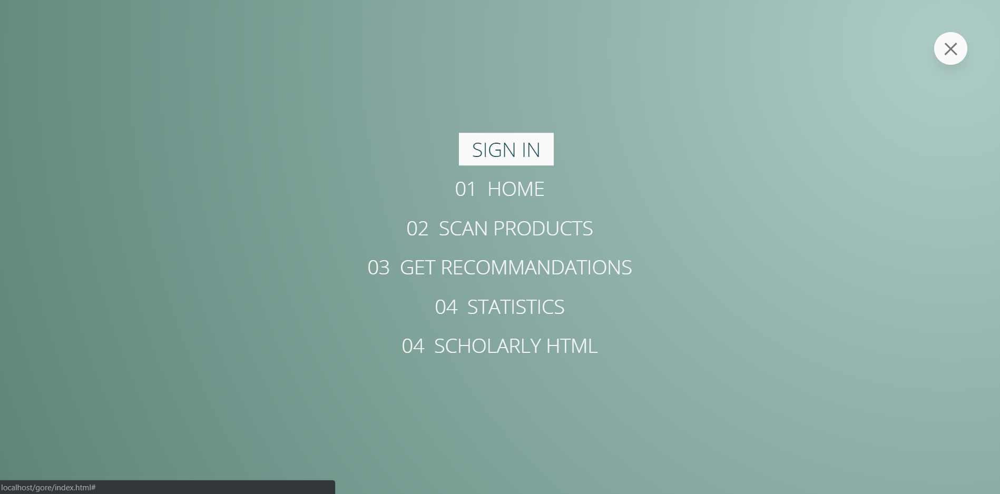
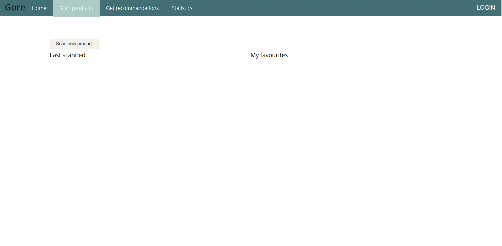
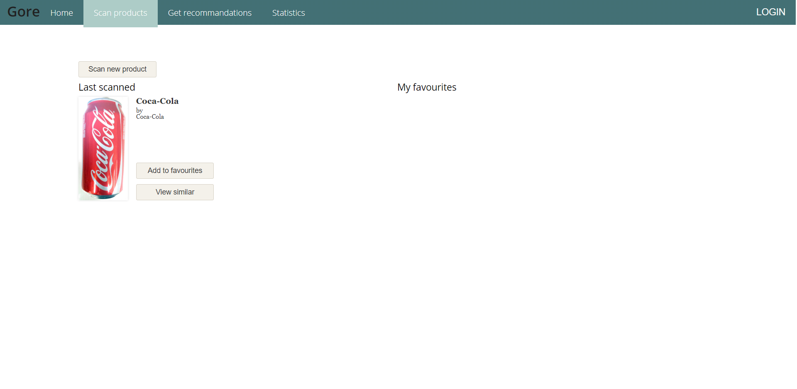
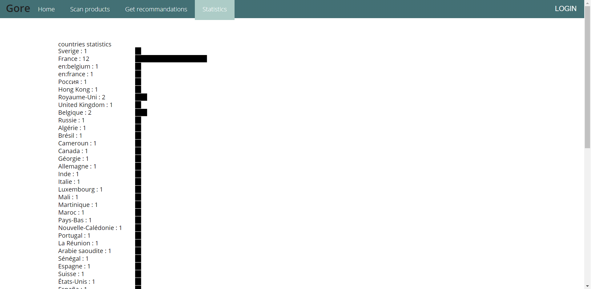

GORE, or better said "Better Goods Web Recommender", is a website used enlarge your current library of possible
goods to consume, being capable of using the user's preferences and those of his friends to
recommend future
possible ingredients or food stuffs.
Gore, while seeming simple or even useless, can be a saviour in case you are at your wits ends while choosing what to eat, you got bored of your current product choices or your mother asked you what you want to eat and doesn't want you to be unimaginative.
Just add to the filters what kind of product you wish to see and do not wish to see, or even scan products to add them as your favorite to make the search more efficient, and you may discover products you weren't aware of or even might get in the mood to eat something you haven't in a long time!
To make it easier for the user to use our app, we decided to explain, step by step, how to explore and use our app through this written tutorial and a video.
It is possible to login for every page of the app. I the dashboard, login is available both from the Login button, under the Gore logo, and from the menu that can be opened by clicking on the icon on the right upper side of the page.


To scan a product, on the scan page of course, it is enough to click on the "Scan product" button, which will open a windows window from which the user will select the picture to scan for codes.
Once chosen, the app will return the product it found, if it found any, giving the choice to the user to add the product to his favorite list or view similar products.


The statistic page, altough being static, displays interesting information for the user about the general use of the app.

Login
Scan